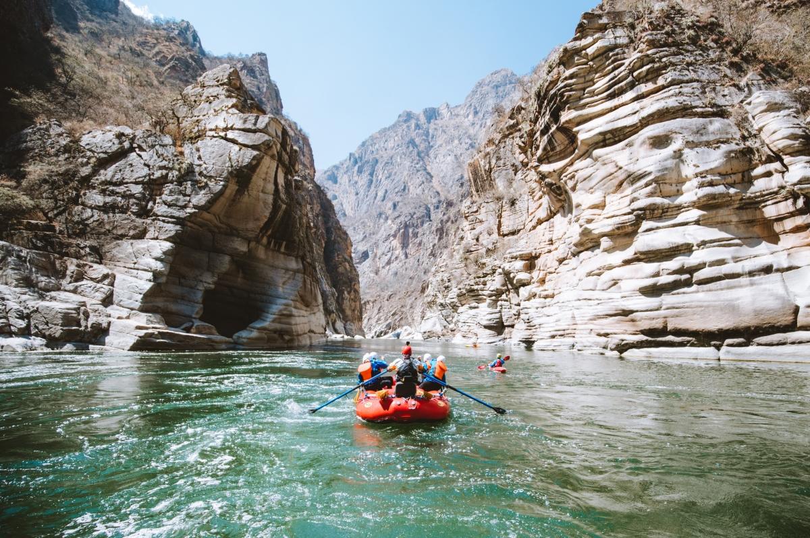

Not far from Lima, just a couple of hours away, is this adventure destination where there are landscapes, fun and adrenaline. The ideal place to disappear for a weekend.
Cusco

Far from the sea and the coastal deserts, we have the Apurimac River. This other side of Cusco is shown as a perfect setting to venture into one of the deepest rafting circuits in the country.
Tambopata
But without a doubt the best of all is located in Tampobata, it is quite a privilege. An opportunity that not many have, since it is an unimaginable encounter with restless fauna: ocelots, pumas, monkeys, alligators or river wolves.